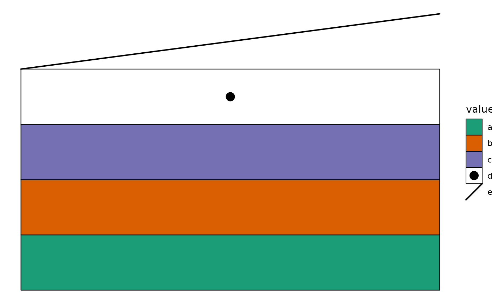

![[Questioning]](figures/lifecycle-questioning.svg)
geom_gshape depends on the new aesthetics gshape (shape with grid
functions), which should always be provided with scale_gshape_manual(),
in which, we can provide a list of grobs or functions that define how each
value should be drawn. Any ggplot2 aesthetics can be used as the arguments.
Arguments
- ...
Arguments passed on to
ggplot2::discrete_scalenameThe name of the scale. Used as the axis or legend title. If
waiver(), the default, the name of the scale is taken from the first mapping used for that aesthetic. IfNULL, the legend title will be omitted.minor_breaksOne of:
NULLfor no minor breakswaiver()for the default breaks (none for discrete, one minor break between each major break for continuous)A numeric vector of positions
A function that given the limits returns a vector of minor breaks. Also accepts rlang lambda function notation. When the function has two arguments, it will be given the limits and major break positions.
labelsOne of the options below. Please note that when
labelsis a vector, it is highly recommended to also set thebreaksargument as a vector to protect against unintended mismatches.NULLfor no labelswaiver()for the default labels computed by the transformation objectA character vector giving labels (must be same length as
breaks)An expression vector (must be the same length as breaks). See ?plotmath for details.
A function that takes the breaks as input and returns labels as output. Also accepts rlang lambda function notation.
limitsOne of:
NULLto use the default scale valuesA character vector that defines possible values of the scale and their order
A function that accepts the existing (automatic) values and returns new ones. Also accepts rlang lambda function notation.
na.translateUnlike continuous scales, discrete scales can easily show missing values, and do so by default. If you want to remove missing values from a discrete scale, specify
na.translate = FALSE.dropShould unused factor levels be omitted from the scale? The default,
TRUE, uses the levels that appear in the data;FALSEincludes the levels in the factor. Please note that to display every level in a legend, the layer should useshow.legend = TRUE.guideA function used to create a guide or its name. See
guides()for more information.callThe
callused to construct the scale for reporting messages.superThe super class to use for the constructed scale
- values
A list of grobs or functions (including purrr-like lambda syntax) that define how each cell's grob (graphical object) should be drawn.
- breaks
One of:
NULLfor no breakswaiver()for the default breaks (the scale limits)A character vector of breaks
A function that takes the limits as input and returns breaks as output
- na.value
The aesthetic value to use for missing (
NA) values
Life cycle
We're unsure whether this function is truly necessary, which is why it is
marked as questioning. So far, we've found that geom_subrect() and
geom_subtile() handle most use cases effectively.
Aesthetics
geom_gshape() understands the following aesthetics. Required aesthetics are displayed in bold and defaults are displayed for optional aesthetics:
| • | x | |
| • | y | |
| • | gshape | |
| • | alpha | → NA |
| • | colour | → "black" |
| • | fill | → NA |
| • | group | → inferred |
| • | linetype | → 1 |
| • | linewidth | → 0.5 |
| • | shape | → 19 |
| • | size | → 1.5 |
| • | stroke | → 0.5 |
Learn more about setting these aesthetics in vignette("ggplot2-specs", package = "ggplot2").
Examples
library(grid)
ggplot(data.frame(value = letters[seq_len(5)], y = seq_len(5))) +
geom_gshape(aes(x = 1, y = y, gshape = value, fill = value)) +
scale_gshape_manual(values = list(
a = function(x, y, width, height, fill) {
rectGrob(x, y,
width = width, height = height,
gp = gpar(fill = fill),
default.units = "native"
)
},
b = function(x, y, width, height, fill) {
rectGrob(x, y,
width = width, height = height,
gp = gpar(fill = fill),
default.units = "native"
)
},
c = function(x, y, width, height, fill) {
rectGrob(x, y,
width = width, height = height,
gp = gpar(fill = fill),
default.units = "native"
)
},
d = function(x, y, width, height, shape) {
gList(
pointsGrob(x, y, pch = shape),
# To ensure the rectangle color is shown in the legends, you
# must explicitly provide a color argument and include it in
# the `gpar()` of the graphical object
rectGrob(x, y, width, height,
gp = gpar(col = "black", fill = NA)
)
)
},
e = function(xmin, xmax, ymin, ymax) {
segmentsGrob(
xmin, ymin,
xmax, ymax,
gp = gpar(lwd = 2)
)
}
)) +
scale_fill_brewer(palette = "Dark2") +
theme_void()
